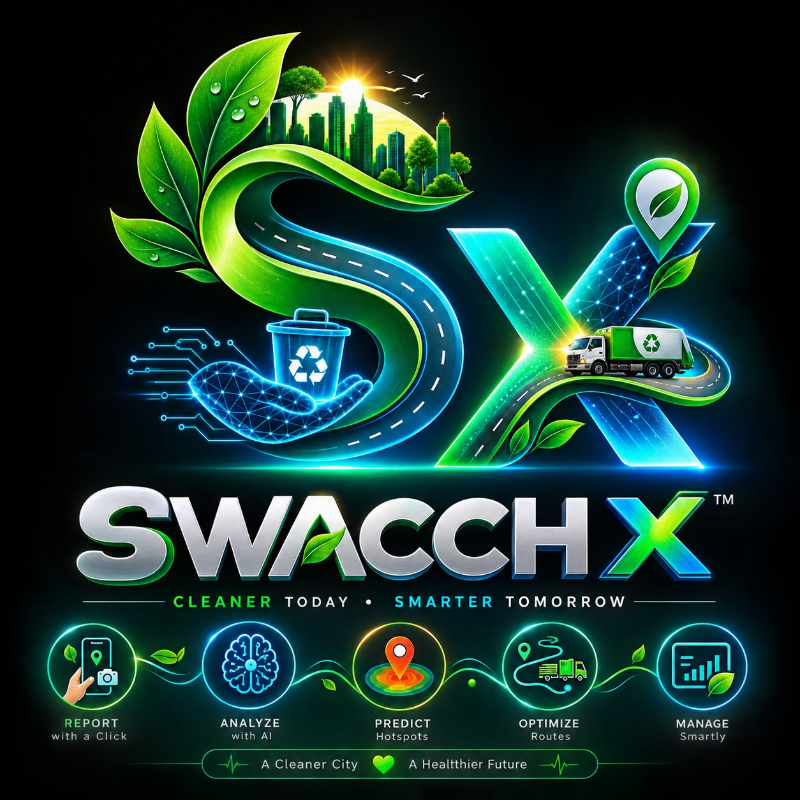

Point camera at waste hazards. AI classifies type & geolocates instantly.
Use earned CivicPoints for zero-emission infrastructure benefits.
Real-time local municipal sanitation vectors tracking data parameters.
Sustainable Cities
84.2% +4.2% MoMResponsible Consump.
1.8 Tons Plastic DivertedForecast fill patterns via historic data cycles
122 Oak Street (Zone Route Fleet Delta)
Overflowing trash receptacle corridor completely blocking pedestrian crossing grids safety arrays paths.